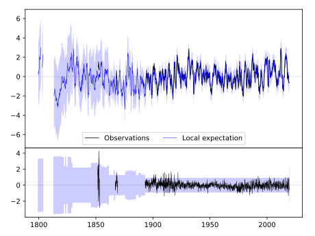
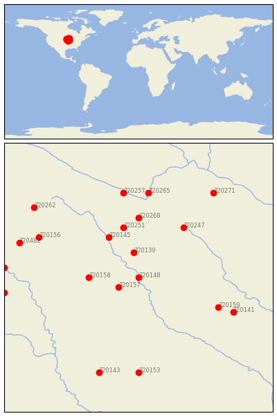
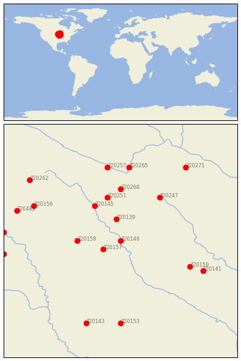

FORT DODGE 5NNW [USA]

 
| Neighbour | Name | Country | Distance | Lon/Lat | Years |
|---|
| 720148 | FORT DODGE 5NNW | USA | 0 | -94.2, 42.6 | 1851-2019 |
| 720157 | ROCKWELL CITY | USA | 39 | -94.6, 42.4 | 1893-2019 |
| 720139 | ALGONA 3 W | USA | 56 | -94.3, 43.1 | 1861-2019 |
| 720158 | STORM LAKE 2 E | USA | 81 | -95.2, 42.6 | 1889-2019 |
| 720145 | ESTHERVILLE 2 N | USA | 101 | -94.8, 43.4 | 1893-2019 |
| 720251 | FAIRMONT | USA | 113 | -94.5, 43.6 | 1887-2019 |
| 720247 | ALBERT LEA 3 SE | USA | 133 | -93.3, 43.6 | 1885-2019 |
| 720268 | WINNEBAGO | USA | 133 | -94.2, 43.8 | 1893-2019 |
| 720159 | TOLEDO 3N | USA | 147 | -92.6, 42.0 | 1893-2019 |
| 720141 | BELLE PLAINE | USA | 174 | -92.3, 41.9 | 1889-2019 |
| 720156 | ROCK RAPIDS | USA | 185 | -96.2, 43.4 | 1893-2019 |
| 720265 | ST PETER | USA | 189 | -94.0, 44.3 | 1877-2019 |
| 720257 | NEW ULM 2 SE | USA | 190 | -94.5, 44.3 | 1864-2019 |
| 720482 | CANTON | USA | 210 | -96.6, 43.3 | 1893-2019 |
| 720153 | MT AYR | USA | 211 | -94.2, 40.7 | 1892-2019 |
| 720143 | CLARINDA | USA | 221 | -95.0, 40.7 | 1872-2019 |
| 720494 | VERMILLION 2 SE | USA | 221 | -96.9, 42.8 | 1884-2019 |
| 720343 | WAKEFIELD | USA | 224 | -96.9, 42.3 | 1893-2019 |
| 720271 | ZUMBROTA | USA | 224 | -92.7, 44.3 | 1891-2019 |
| 720262 | PIPESTONE | USA | 230 | -96.3, 44.0 | 1893-2019 |